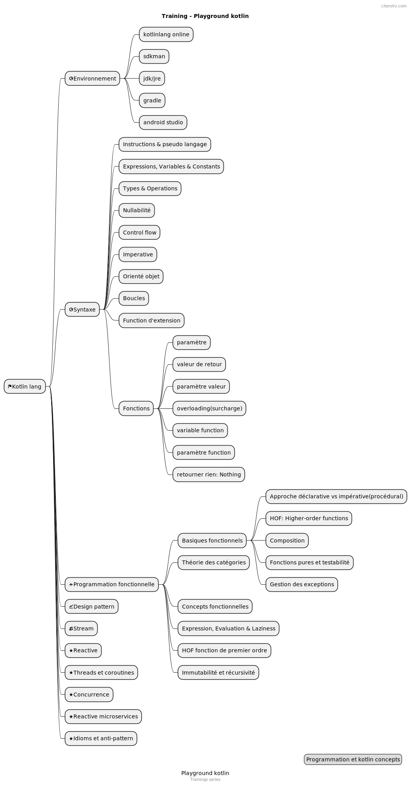

Training - Kotlin
Publié le 12 May 2022
Mind map

Programmation fonctionnelle
Les execrices sont tirés du livre:
Functional programing in kotlin by tutorials
Written by Massimo Carli
repo: https://github.com/kodecocodes/fpk-materials
Syntaxe
FirstProgramTest
notions: affichage écran, fonction
FirstProgramTest: source
ConcatFunctionTest
notions: memoire, variable, valeur, objet, extension de fonction
ExampleUnitTest: source
BirthdayMessageTestOutput
notions: ensembles, boucles
Introduction to kotlin
BirthdayMessageTestOutput: source
Cours de kotlin

Basiques fonctionnels
Declarative X imperative approach
package functional
import kotlin.test.Test
import kotlin.test.assertEquals
class DeclarativeTests {
val input = listOf(
"123", "abc", "1ds", "987", "abdf", "1d3", "de1", "88", "101"
)
fun imperativeSum(list: List<String>): Int {
var sum = 0
for (item in list) {
try {
sum += item.toInt()
} catch (_: NumberFormatException) {
}
}
return sum
}
@Test
fun `test imperative approach`() {
imperativeSum(input).run {
println("Sum $this")
assertEquals(1299, this)
}
}
fun isValidNumber(s: String) = try {
s.toInt()
true
} catch (_: NumberFormatException) {
false
}
fun declarativeSum(list: List<String>) = list
.filter(::isValidNumber)
.map(String::toInt)
.sum()
@Test
fun `test declarative approach`() {
assertEquals(1299, declarativeSum(input).apply {
println("Sum $this")
})
}
}Exercice 1.1
Implémenter la fonction sumInRange, qui additionne les valeurs dans
une List<String> dans un intervalle donné. La signature est :
fun sumInRange(input: List<String>, range: IntRange): Int@Test
fun `Exercise 1_1`() {
assertEquals(4, sumInRange(
listOf("1", "10", "a", "7", "ad2", "3"),
1..5
).apply { println("sumInRange 1..5: $this") }
)
}Essayez-le et vérifiez votre réponse avec la solution.
Higher-order functions
package functional
import java.io.ByteArrayOutputStream
import java.io.PrintStream
import java.lang.System.*
import java.lang.Thread.sleep
import kotlin.math.sign
import kotlin.test.Test
import kotlin.test.assertEquals
class BasicsHOFTests {
val ONE_SECOND = 1000L
@Test
fun `high order function`() {
//capture de la sortie standard
val standardOut: PrintStream? = out
val outputStreamCaptor = ByteArrayOutputStream()
setOut(PrintStream(outputStreamCaptor))
3.times { println("Hello") }
assertEquals(
buildString {
repeat(3) { append("Hello\n") }
deleteAt(length - 1)
}, outputStreamCaptor
.toString()
.trim()
)
//libération de la sortie standard
setOut(standardOut)
}
fun Int.times1(fn: () -> Unit) {
for (i in 1..this) {
fn()
}
}
fun Int.times2(fn: () -> Unit) {
for (i in 1..this) fn()
}
fun Int.times3(fn: () -> Unit) =
(1..this).forEach { fn() }
fun Int.times4(fn: () -> Unit) =
repeat((1..this).count()) { fn() }
fun Int.times(fn: () -> Unit) =
(1..this).forEach { _ -> fn() }
}Exercice 1.2
Implémenter chrono, qui accepte une fonction de type () →
Unit en entrée et renvoie le temps passé à l’exécuter. La signature est :
fun chrono(fn : () -> Unité) : Long@Test
fun `Exercise 1_2`() {
val waitOneSec = { sleep(ONE_SECOND) }
chrono(waitOneSec).apply {
println("chrono: $this")
assertEquals(1, sign)
}
}Essayez-le et vérifiez votre réponse avec la solution.
Composition
package functional
import kotlin.test.Test
import kotlin.test.assertEquals
fun double(x: Int): Int = 2 * x
fun square(x: Int): Int = x * x
fun squareAndDouble1(x: Int) = double(square(x))
infix fun <A, B, C> ((A) -> B).compose(g: (B) -> C)
: (A) -> C = { a -> g(this(a)) }
class CompositionTests {
@Test
fun composition_impure() {
assertEquals(200, double(square(10)))
assertEquals(200, squareAndDouble1(10))
}
@Test
fun composition_pure() {
val squareAndDouble = ::square compose ::double
assertEquals(200, squareAndDouble(10))
}
}Pure functions and testability
package functional
import java.io.ByteArrayOutputStream
import java.io.PrintStream
import java.lang.System.out
import java.lang.System.setOut
import kotlin.test.Test
import kotlin.test.assertEquals
var count = 0
//impure car une variable global subit un effet de bord
fun impure(value: Int): Int {
count++
return value + count
}
//impure car utilisation de la sortie standard qui fait muter le system
fun addOneAndLog(x: Int): Int {
val result = x + 1
println("New Value is $result")
return result
}
//pure
fun addOne(x: Int) = (x + 1).run {
Pair(this, "New Value is $this")
}
class PureTests {
@Test
fun `impure fonction`() {
assertEquals(3, impure(2))
val standardOut = out
val outputStreamCaptor = ByteArrayOutputStream()
setOut(PrintStream(outputStreamCaptor))
addOneAndLog(3)
assertEquals(
"New Value is 4",
outputStreamCaptor
.toString()
.trim()
)
setOut(standardOut)
}
@Test
fun `pure fonction`() {
addOne(3).run {
assertEquals(4, first)
assertEquals("New Value is 4", second)
}
}
}Exception handling
package functional
import org.junit.jupiter.api.assertThrows
import kotlin.Result.Companion.failure
import kotlin.Result.Companion.success
import kotlin.test.Test
import kotlin.test.assertEquals
//NumberFormatException est un effet de bord qui rend la fonction impure
fun strToInt(str: String) = str.toInt()
//pure
fun strToIntOrNull(str: String) = try {
str.toInt()
} catch (nfe: NumberFormatException) {
null
}
//pure avec gestion de l'exception plus élégante
fun strToIntResult(str: String): Result<Int> =
try {
success(str.toInt())
} catch (nfe: NumberFormatException) {
failure(nfe)
}
class ExceptionHandlingTests {
@Test
fun impure() {
assertThrows<NumberFormatException> { strToInt("foo") }
assertEquals(1, strToInt("1"))
}
@Test
fun pure() {
assertEquals(null, strToIntOrNull("foo"))
assertEquals(1, strToIntOrNull("1"))
}
@Test
fun `pure avec result`() {
assertEquals(1, strToIntResult("1").getOrNull())
assertEquals(
"For input string: \"foo\"",
strToIntResult("foo")
.exceptionOrNull()
?.message
)
}
}Points clés
-
Alors que la programmation orientée objet signifie programmer avec des objets, la programmation fonctionnelle signifie programmer avec des fonctions. Vous décomposez un problème en plusieurs sous-problèmes, que vous modélisez avec les fonctions.
-
Les fonctions d’ordre supérieur acceptent d’autres fonctions en entrée ou renvoient d’autres fonctionnent comme des valeurs de retour. La théorie des catégories est la théorie de la composition, et vous l’utilisez pour comprendre comment composer vos fonctions dans un programme de travail. La valeur de sortie d’une fonction pure ne dépend que de ses paramètres d’entrée, et elle n’a pas d’effets secondaires.
-
Un effet secondaire est quelque chose qu’une fonction fait au monde extérieur. Ce peut être un journal dans la sortie standard ou la modification de la valeur d’une variable globale. La programmation fonctionnelle fonctionne pour les fonctions pures, mais elle fournit également les des outils pour transformer des fonctions impures en fonctions pures. Vous pouvez rendre une fonction impure pure en déplaçant les effets pour les rendre partie de la valeur de retour.
-
La programmation fonctionnelle est une question de composition. La gestion des erreurs est un cas typique d’effets secondaires, et Kotlin vous donne les outils pour les gérer de manière fonctionnelle.
Approfondir java8: lambdas expressions et interface fonctionnelles
Théorie des catégories
La théorie mathématique des catégories:
Fondamentaux des fonctions
Exercice 2.1
Pouvez-vous écrire un exemple de fonction mappant des valeurs distinctes
dont le domaine à des valeurs non distinctes dans la plage, comme f(b) et f(c) dans la figure ci-dessous ?
Essayez-le, puis vérifiez le projet de défi pour une solution à voir comment tu as fait.
Vous trouverez des conseils et une explication en suivant le lien vers la
solution.
Exercise 2.2
Can you write the inverse function of twice ?
What are the domain and range for the inverse function?
Check out the challenge project and Appendix B for the solution.
fun chrono(fn : () -> Unité) : Long@Test
fun `Exercise 1_2`() {
val waitOneSec = { sleep(ONE_SECOND) }
chrono(waitOneSec).apply {
println("chrono: $this")
assertEquals(1, sign)
}
}Essayez-le et vérifiez votre réponse avec la solution.